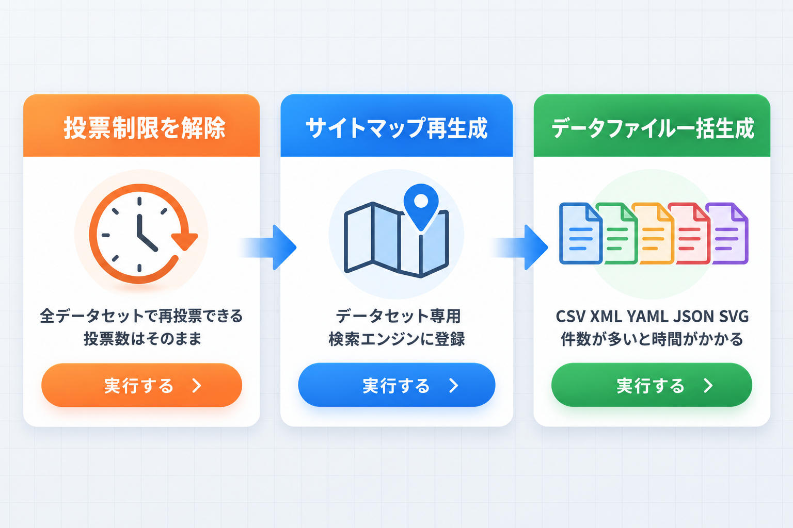
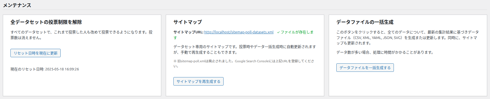
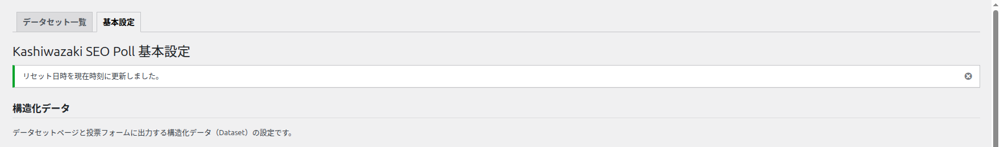
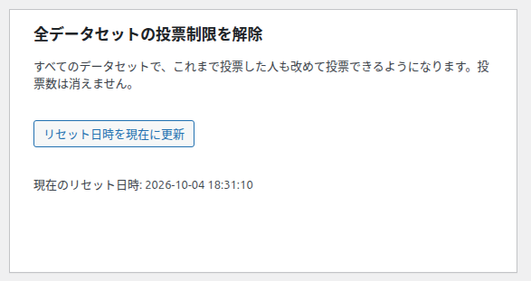
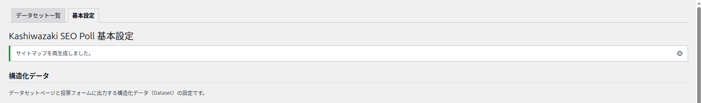
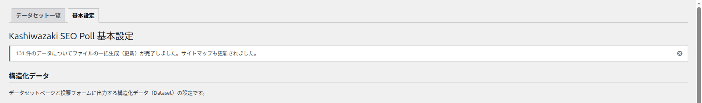

メンテナンス
基本設定画面の下部にある「メンテナンス」には、すべてのデータセットにまとめて効く3つの操作があります。ボタンを押すとすぐに実行され、確認のダイアログは出ません。


全データセットの投票制限を解除
画面の説明: 「すべてのデータセットで、これまで投票した人も改めて投票できるようになります。投票数は消えません。」
| 項目 | 内容 |
|---|---|
| ボタン | リセット日時を現在に更新 |
| 押すと | 「リセット日時」を今の日時にします。これより前に投票した人は、すべてのデータセットで「投票済み」とみなされなくなり、再び投票できます |
| 変わらないもの | 票数、投票者数（IP）、調査期間、データファイル |
| 状態の表示 | 「現在のリセット日時: 年-月-日 時:分:秒」。一度も実行していなければ「まだリセット日時は設定されていません。」 |
| 結果 | 「リセット日時を現在時刻に更新しました。」 |


取り消しはできません
リセット日時を前の日時に戻す操作はありません。実行すると、すべてのデータセットで同じ人がもう一度投票できるようになるため、票が重複して増える可能性があります。
使いどころ
同じ設問で、期間を区切って「第2回」の投票を集めたいときなどに使います。1つのデータセットだけをやり直したいときは、編集画面の「集計データを全削除する」を使います（票も0になります）。
サイトマップ
| 項目 | 内容 |
|---|---|
| サイトマップURL | （サイトのアドレス）/sitemap-poll-datasets.xml。ファイルがあればリンクと緑の「✓ ファイルが存在します」、無ければ赤の「⚠ ファイルが存在しません」 |
| 画面の説明 | 「データセット専用のサイトマップです。投票時やデータ一括生成時に自動更新されますが、手動で再生成することもできます。」「※ 旧sitemap-poll.xmlは廃止されました。Google Search Consoleには上記URLを登録してください。」 |
| ボタン | サイトマップを再生成する |
| 結果 | 「サイトマップを再生成しました。」 |

サイトマップに載るページ
- 載る: 公開中のデータセットの詳細ページ（
/datasets/detail-番号/）と形式別ページ（/datasets/csv/detail-番号/など、ファイルがあるものだけ）。 - 載らない: データセット一覧、形式別の一覧、パスワード保護したデータセット。
- データセットを公開すると載り、非公開・下書き・ゴミ箱にすると自動で外れます。
検索エンジンへの登録
表示されている「サイトマップURL」を、Google Search Console の「サイトマップ」に登録します。以前の版の sitemap-poll.xml を登録している場合は、新しい URL に置き換えてください。
「⚠ ファイルが存在しません」が消えないとき
サーバーの設定で、サイトのフォルダにファイルを書き込めない場合があります。この場合は「サイトマップを書き込めませんでした。サイトのフォルダに書き込めるか、サーバーの設定を確認してください。」と表示されます。サーバーの書き込み権限をサーバー管理者に確認してください。
データファイルの一括生成
画面の説明: 「このボタンをクリックすると、全てのデータについて、最新の集計結果に基づきデータファイル（CSV, XML, YAML, JSON, SVG）を生成または更新します。同時に、サイトマップも更新されます。」「データ数が多い場合、処理に時間がかかることがあります。」
| 項目 | 内容 |
|---|---|
| ボタン | データファイルを一括生成する |
| 対象 | 公開中のデータセットすべて（下書き・非公開は対象外） |
| かかる時間 | 件数によります。目安として130件程度で数秒でした。処理中は画面の読み込みが続きます |
| 結果 | 「N 件のデータについてファイルの一括生成（更新）が完了しました。サイトマップも更新されました。」 |

こんなときに押します
- データセットページに「利用可能な形式」が表示されない、形式別ページが「見つかりません」になる。
- サーバーの引っ越しやプラグインの更新の後に、ファイルを確実に作り直したい。
票は変わりません
一括生成は、保存されている集計からファイルを作り直すだけです。票数や設定は変わりません。
この画面で出るメッセージ
| メッセージ | 種類 | 意味と対処 |
|---|---|---|
| リセット日時を現在時刻に更新しました。 | 成功 | — |
| サイトマップを再生成しました。 | 成功 | — |
| サイトマップを書き込めませんでした。サイトのフォルダに書き込めるか、サーバーの設定を確認してください。 | エラー | サーバーの書き込み権限をサーバー管理者に確認します（一括生成のときも、サイトマップを書き込めなければ表示されます） |
| N 件のデータについてファイルの一括生成（更新）が完了しました。サイトマップも更新されました。 | 成功 | — |
| 処理対象のデータが見つかりませんでした。サイトマップは更新されました。 | 情報 | 公開中のデータセットがありません。データセットを公開してから実行します |
| N 件のデータについてファイルの生成を試みましたが、M 件で書き込めないファイルがありました。サーバーの書き込み権限を確認してください。 | 警告 | 一部のファイルを書き込めませんでした。サーバーの書き込み権限を確認します |
| N 件のデータすべてでファイルを書き込めませんでした。サーバーの書き込み権限を確認してください。 | エラー | 同上 |
| 公開していないデータセットのデータファイルが N 件削除できませんでした。データファイルの保存用フォルダの書き込み権限を確認してください。 | エラー | 一括生成では、公開していない（下書き・非公開・パスワード保護・削除済みの）データセットのファイルも片付けます。消せなかったときに表示されます。書き込み権限を確認してから、もう一度押します |
| Kashiwazaki SEO Poll: データセット（ID: …）で、投票数などの保存が途中で止まったか、データベースのエラーで元に戻せませんでした。…（管理画面の上部） | エラー | 投票・選択肢・投票数の保存の途中でデータベースとの接続が切れて処理が止まったときや、エラーで元の状態に戻せなかったときに、管理者に表示されます。編集画面で選択肢と投票数を確認し、必要なら直して「更新」を押すと消えます |
| Kashiwazaki SEO Poll: 公開をやめたデータセット（ID: …）のデータファイルを削除できませんでした。（管理画面の上部） | エラー | 非公開・ゴミ箱・削除にしたときにファイルを消せなかった場合に、管理者に表示されます。書き込み権限を確認し、「データファイルを一括生成する」を押すと消し直します |
| Nonce検証に失敗しました。もう一度お試しください。 | エラー | 画面を長く開いていたなどで確認が通りませんでした。再読み込みしてもう一度押します |
再読み込みしても実行し直されません
ボタンを押すと処理が終わってから画面が読み込み直され、結果が表示されます。その画面をブラウザで再読み込みしても、同じ操作がもう一度実行されることはありません。もう一度実行したいときは、ボタンを押し直してください。